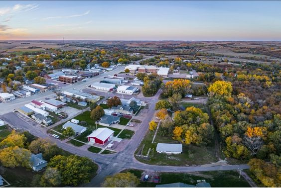

Welcome!
If you’re here you must be interested in finding a delicious homecooked meal on Highway 281! Join us during our open hours and enjoy some meals with locally raised beef and real mashed potatoes.
| Sunday | Monday | Tuesday | Wednesday | Thursday | Friday | Saturday |
|---|---|---|---|---|---|---|
| 7am - 2pm | 7am - 2pm | 7am - 2pm | 7am - 9pm | 7am - 9pm | 7am - 9pm | 7am - 9pm |
Location
Just right off Highway 281 you can find our cozy cafe. With easy access to parking, a store right next door, and plent of room for everyone it's a great spot to stop!
